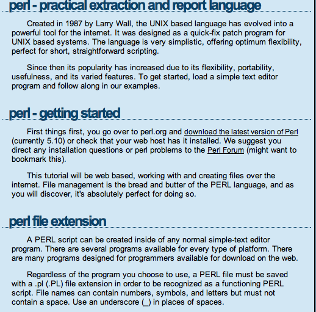

blogs.perl.org
module docs (http://metacpan.org)
Perlmonks
stackoverflow
user submitted data
Threaded forums
Stackoverflow and Perlmonks already have this!
Perlmonks == slow, bogged down, shitty search
Stackoverflow is an alright thing. It could be narrowed down to a much more focused scope.
Favorites
Bookmark your favorite documentation, code, code snippets, modules (using metacpan), documentation, and be able to search them
Useful because I personally can't sift throught my Chrome bookmarks efficiently
Catalyst application deployment
the advent of Plack has helped this a whole hell of a lot, but frankly I find the Catalyst Wiki a bit like trying to hit a fly with a brick.
From across the room.
Drunk. (no slight towards MojoMojo intended)
Though retired, it still contains a whole lot of relevant and good information.
DBIx::Class Intricacies
This ORM is a beautiful thing, and I'm indebted for life to mst for creating something that allows me to not have to have the slightest clue what I'm doing in SQL and still get things done. However, the rabbit hole goes deep, and I want to add a map to the goodies.
I love Moose, and it's really done some amazing things to the Perl 5 world, but I just can't keep all of it in my head. See above about goodies.
Create a general index of reliable Perl knowledge.
Allow users to create a subset of this knowledgebase of their own.

Out of date
Propogating bad practices
Almost never refer to Modern Perl
"Does Moose method delegation in attributes take an arrayref, or a hashref?" - this is no slight at the Moose documentation, it's awesome.
"If I want to get ahold of the connection info from a DBIx::Class ResultSet object, how would I do that?"
unless you're on irc.perl.org#dbix-class
which is fine, but mst/ribasushi/Caelum/frew/et al have better things to do than hold my hand (gphat and jshirley are exempt here)
I want it to be easy
I want it to be fast
would allow people that know what they're doing in the pertinent IRC channels and mailing lists to point people with queries to something that explains things in full, or at least so that the explainer doesn't have to repeat themselves to each person that asks said question.
DRY is a good thing.
But it will be!
Code is up on github (https://github.com/dhoss/PerlFu)
And IRC (irc.perl.org/#perlfu)
And beta will be (back) up soon: beta.perlfu.org
Please bear in mind I am trying to level up in Skyrim so I can forge Dragon Armor. And I just installed Jedi Knight 2: Jedi Outcast. And Knights of the Old Republic. And I have a job.